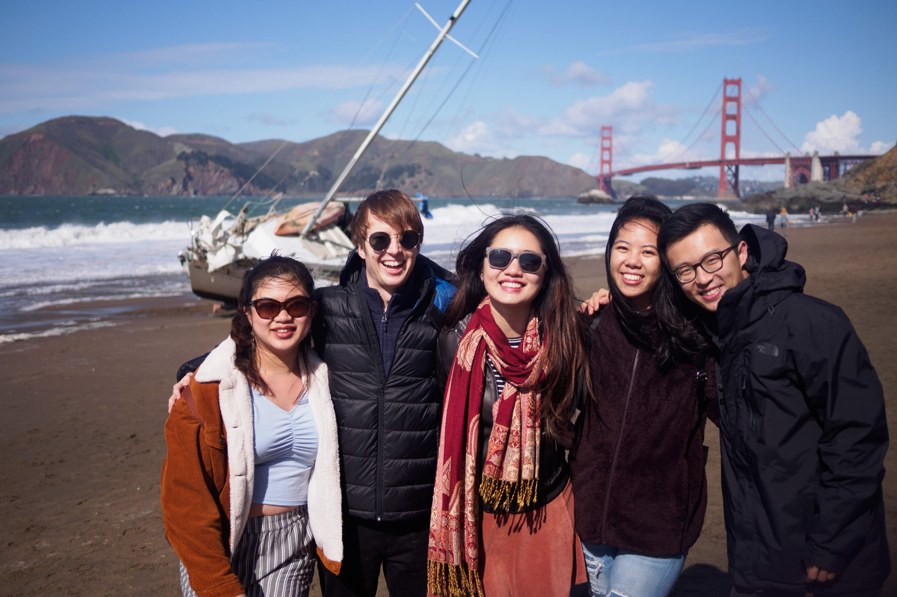
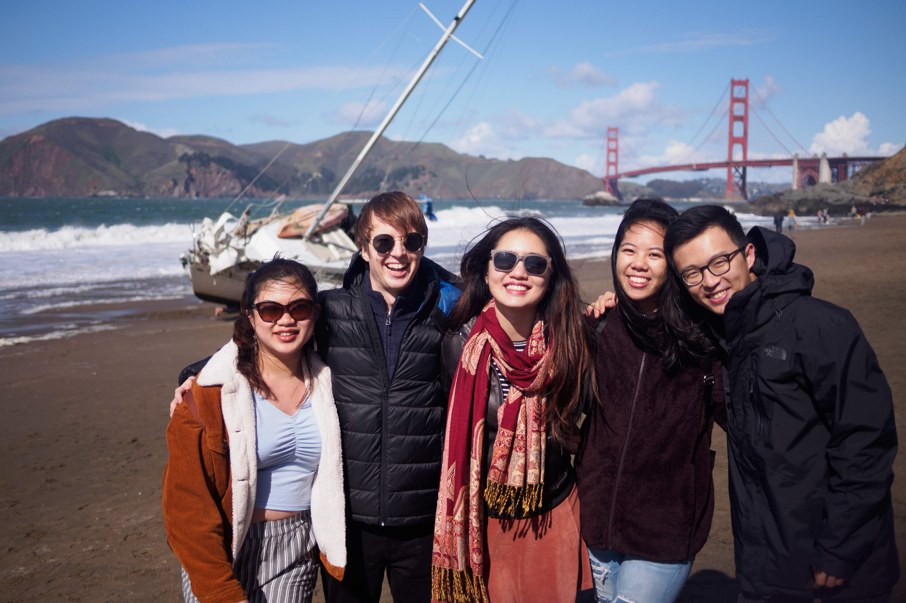

Phillippines
beautiful resort
made food poisoning ok
missed out on mangoes
beautiful resort
made food poisoning ok
missed out on mangoes
marina bay sands
chicken and rice, not bad
gardens and clubbing
shibuya crossing
did not change my life, but those
seven elevens
long escalators
fancy cars and beer
gorgeous cityline
a week of food and
mao tai with family who
can def out-drink you
a one night roadtrip
santa monica pier and
passable tacos
warm and soft beignets
fresh oysters, home of voodoo
jazz, dancing, good vibes
climbed angel's landing
snowy bryce, antelope pics
grand canyon: quite grand
first time in vegas
found friends, a club, and porter
beautiful hotels
food and thrift shopping
special edition ciroc
we say: go raptors!
ellenos is good
so much food so little time
a nice brewery
first time, not on fire
finally found screensaver
alex honnold = crazy
i flew here five times
july fourth, podcast, burlesque
work, holiday party, fun
should you date your best friend? i'm grateful that i am. it's crazy to think how much we've grown, what we've accomplished, all the "firsts" we've had. the support, the adventures, as well as the fighting and hurt. but i know that i've come out of 2019 stronger, and with a better understanding of myself. i'm excited to brave the future together.
where would i be without you all? these photos are definitely not exhuastive and to include a photo with every person who has made a difference in my life in 2019 (whether you know it or not) would make loading this page a nightmare [i didn't have time to store images correctly or optimize performance :")].
thank you to my best friends who i text more regularly, who always have my back even if we haven't talked in weeks, who i can be myself around. i've made it to where i am now, and am motivated to chase my dreams because of you all.
thank you to my friends who i may not talk to that often. i'm working on being better at keeping in touch, but know that im grateful to have you in my life, even if it's just a smile and reaction from afar to your instagram stories.
i've made so many NEW friends this year as well! at work, at parties, through mutual friends. i met like-minded people, and felt like i could make deeper connections with them. i can't wait to continue these relationships and inspire each other in 2020.
Selected Memories! Grad Trip, Spring Break, Phi Rho formal, a night to (not) remember in June, kool haus, July 4, a final meal at Tasty Pot?!, so many housewarmings, RYSK House, Mid-Autumn Festival, drunk Catan, Edward getting his piercings, Joe & The Juice, crabbing, adventures in NY, wine nights
 

I officially graduated in Dec 2018, however, I walked across the greek theater stage with my peers May 2019. I've never been so proud to be among all my fellow computer science majors, after conquering environment diagrams, text editor, cracking the coding interview, countless rejections, all nighters, clubs, etc. CS commencement was beautifully sunny, a perfect day to close a fleeting, unique chapter of our lives.

I started my first full-time job as a software engineer in July. Moving across the bay to San Francisco seemed like a trivial move at the time, but adult life is a lot different from college life. No more mid-day naps, no more safety net, no more defined "end" to the semester and a fresh start the next. It's been a humbling and challenging experience, but one that I've embraced and look forward to improving next year.
In September, I joined this nonprofit to foster diverse, inclusive, and harassment-free workplaces. A big part of this nonprofit is reaching out to VCs across the world to encourage them to write a public anti-harassment policy. I, specifically, worked to get Berkeley VCs to join the movement.
At the end of 2019, we now have 170 on board (including likes of Andreessen Horowitz, 500 Startups, First Round Capital), representing 23 different countries!
Finding this group of outstanding women has made me so happy in 2019. Working with these policy makers, entrepreneurs, mba students, etc., has been an absolute honor and I am inspired every day by what we do and what we hope to accomplish. Please reach out to me if you're interested in our mission or want to get involved!
This took quite a bit of time and effort to create. I could finally take creative rein, since I wasn't worried about making it "resume" like or super readable for recruiters. I wanted an 8-bit theme, to create a video game vibe. At the end, I did not have the bandwidth to make a proper "game" site with full animations and movement. However, I dabbled a bit in pixel art and refreshed my web design skills with HTML / CSS / JS. I will probably revamp it again with a completely new design next year :)
Checkout my daily drawings in May 2019 here. Digital painting has always been something I've wanted to improve on, given my background in black and white sketching as a kid. It's always hard to find time to practice, and I was determined to spend a month drawing.
Where do I begin? This project has been one of the most rewarding things I've done in 2019. I've been more wary how many times I say "like", I've learned so much about my friends and their hobbies, I've practiced the art of interviewing, I've improved my writing and speaking skills. It's even given rise to a new podcast. When you have an idea, just go out there and make it happen! Stop hesistating and start doing and there will be magic.
Speaking of podcasts! I began working on this new podcast with 2 friends in October. We want to amplify the voices of Asian Americans and other immigrants to inspire others to follow their dreams and build a community. It's been a wild ride finding guests to interview, investing in equipment for better sound quality, and flying cross-country to record. Look out for our first episode drop in early 2020!!
I can't count the number of earrings that have broken on me due to various reasons. This was the inspiration for me to pull the trigger on an 8 week beginner jewelry fabrication class so that I could ensure quality myself. It was super nice to have a 3 hour break every week from screens, my phone, and the outside world. I spent those 3 hours sawing, sanding, soldering, and polishing. I made a pair of earrings as my first project, and as my final project, a silver ring set with a rose quartz. Everything handmade with love :)
After college, I felt like I forgot how to write. I've attended some great conferences and events this year: SF Developer Week, Tech Inclusion, TABLESTAKES, WIRED25, and WITI Leadership Roundtable at UC Berkeley, and I try to write a summary after each one. I've only managed to finish two summaries: 1 and 2, and I'm in the middle of a summary for WITI since I learned so much from that event. Being able to effectively share your thoughts and ideas is so important and I'm actively working on this skill.

Feb 19: Oakland Coliseum
Feb 23: Bill Graham
March 22 - 23: New Orleans
May 5: Orpheum Theater
June 6: Ray of Light Theater

June 15: Oakland waterfront
August 9 - 11: Golden Gate Park
Dec 22: Brooklyn, NY
An informative, interesting read about how our brains work, guided by 12 principles.
Would recommend to someone looking for an easy-to-read non-fiction book with lessons actually applicable to daily life. Could probably be finished in a Sunday afternoon - evening.
A charming novel about a grouchy old man who's story will leave you laughing, crying, and appreciating the joy, no matter how small, in your life.
This is such a well-written, feel-good book, perfect if you're feeling something more light-hearted.
From the outside, Beartown is a small community bound by a love for hockey. From the inside, secrets are kept, insecurities are hidden, pressure is suppressed, and the one thing that's supposed to bind people together is the very thing that drives them apart.
I loved A Man Called Ove so much so I was very excited to read this book by the same author. It is a darker story, and follows the citizens of Beartown as each of them navigates through society. I wouldn't immediately recommend this book, but it is definitely a worthwhile read.
A mystery novel centering around a record collector who is approached by a mysterious woman to find a lost recording.
I love mystery / detective novels and this one satisfied my craving. It was a unique premise and exciting enough. However, I didn't realize this was a series and the ending lacked motivation to read the next book. A fun read, but not mind blowing.
Another mystery book starring Anne Capestan, heading a police team of misfits and troublemakers.
This book was honestly unmemorable.
The mother of a famous actor enters a funeral parlor to plan her own service. She is found dead later that day.
I was on the mystery train for a couple months this year! I thoroughly enjoyed this book - it was quite interesting as the author puts himself in the novel as a Watson. It wasn't super rewarding, but I had fun and would recommend it to any detective novel fan.
Follow AJ Fikry, a bookstore owner, as he hits bad luck after bad luck, until his life is changed by a mysterious package left at his door.
I'd say this is in a similar vein with A Man Called Ove as a feel-good story. There's humor, mystery, and a love for books. Didn't change my life, but I'd recommend it as a lazy Sunday read.
Secrets, art, identity, independence, love. What happens when a single mother and daughter, "wild and free", enters the life of a family chasing perfection and rules?
READ THIS BOOK!! This was probably my favorite book of the year, a beautiful story with themes that Ng somehow intertwines so perfectly: coming-of-age, clashing of cultures, mystery, motherhood. What is "right" and what is "wrong"? I was happy, sad, angry, shocked, and truly touched. Take a couple days and immerse yourself in the world of Shaker Heights, Ohio.
A young girl grows up in a marsh in the 1950s-60s, isolated and alone. There is trouble brewing and she must learn from nature how to brave the world and interact with the most mysterious creatures, humans.
Little Fires Everywhere was a tough book to follow, but Where the Crawdads Sing rounded out 2019 perfectly. The last book I finished this year, it was an amazing study of human nature, the wild, innocence, and beauty. I would highly recommend anyone to read - you'll cheer, you'll revel, you'll shout, you'll be drawn into the world of the "Marsh Girl".